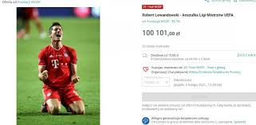

Czynnie wspiera wiele inicjatyw społecznych i charytatywnych. Wraz z żoną bierze udział w akcji Szlachetna Paczka, a także wspiera finały Wielkiej Orkiestry Świątecznej Pomocy i pomaga potrzebującym. W 2021 przekazał na aukcję WOŚP koszulkę, w której wystąpił podczas finału Ligi Mistrzów UEFA 2019/2020. Pamiątkę wylicytowano za ponad 100 tys. złotych. W 2020 małżeństwo przekazało 500 tys. złotych na rzecz Centrum Zdrowia Dziecka, dzięki czemu szpital mógł wyremontować oddział rehabilitacji, który został zalany i częściowo zniszczony w wyniku nawałnicy, jaka przeszła nad Polską w październiku 2017. W tym samym roku para przekazała także darowiznę w wysokości miliona euro na rzecz walki z pandemią COVID-19. Wykorzystując zasięg swoich kont w mediach społecznościowych, zaapelował o noszenie maseczek w okresie światowej pandemii COVID-19.  Od 2014 jest ambasadorem dobrej woli UNICEF. W czerwcu 2014, w ramach misji tej organizacji, odwiedził obóz dla uchodźców Zaatari w Jordanii i wziął udział w kampanii Głos Dzieci, w której z ramienia UNICEF i Unii Europejskiej apelował o wsparcie dla dzieci dotkniętych kryzysami humanitarnymi. Robert Lewandowski wspierał również działania prowadzone przez UNICEF po trzęsieniu ziemi w Nepalu o nazwie #PamiętamyPomagamy oraz akcję Reszta w Twoich rękach, w ramach której zaprojektował szczęśliwy dukat przedstawiający uśmiechniętego chłopca z piłką. W 2018 wsparł akcję charytatywną mającą na celu zbiórkę pieniędzy niezbędnych do rehabilitacji wybitnego polskiego kolarza, Ryszarda Szurkowskiego. 11 listopada 2018, z okazji 100. rocznicy odzyskania przez Polskę niepodległości, wziął udział w akcji #KiedyMyŻyjemy, mającej na celu propagowanie prawidłowego śpiewania polskiego hymnu.